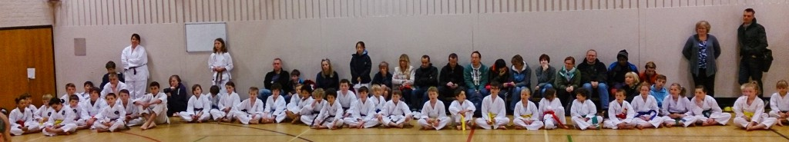

Sanchin Academy Novice Competition
The first Sanchin Academy Novice Competition was held on Sunday, hosted by Bunbu Dojo in Nottingham, with attendees from as far away as Lancaster.

Many of the competitors – and their parents – had not been to a karate competition before. At most competitions, you turn up, compete for a few seconds, then, if you don’t win, sit around all day or go home. This one was different!
We gave lots of spoken and visual information about how competition operates and how scoring works. We gave demonstrations and opportunities to practice. Competitors also got to try their skills many times rather than only once. We hope everyone went away with a better understanding of competition and some useful experience.
Well done to all the competitors. Good sporting attitude and excellent skills were displayed!